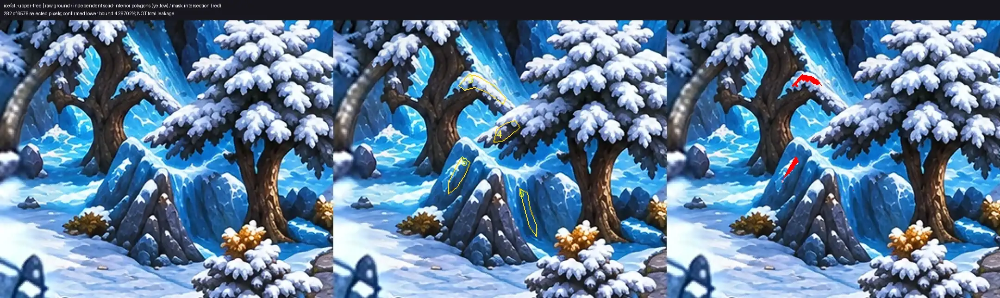
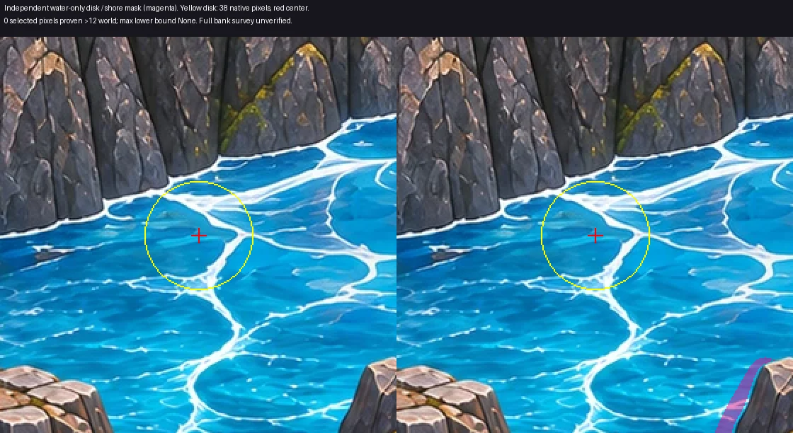

incomplete — upper-tree ทับพื้นผิวแข็งอย่างน้อย 4.287%; ice shore band มีพิกเซลไกลฝั่งเกิน 12 หน่วย ยังไม่รับรอง QA หรือการรวมเข้าเกม
README และข้อจำกัด · ผลตรวจไฟล์/เฟรม/คลิป · ผลตรวจ mask · รายการงานค้าง


เรนเดอร์ออฟไลน์ 24 fps; decode ครบมุมละ 288 เฟรม มุมประมาณจาก landmark ไม่ใช่ภาพเกมจริง ไม่มี runtime cross-fade
ซ้าย = พื้น v7; ขวา = พื้น + effect เวลา 0.375 วินาที แต่ละจุดเปิดแยกได้ใน pairs/; ภาพพื้น/overlay สำหรับตรวจ mask อยู่ใน boundary/